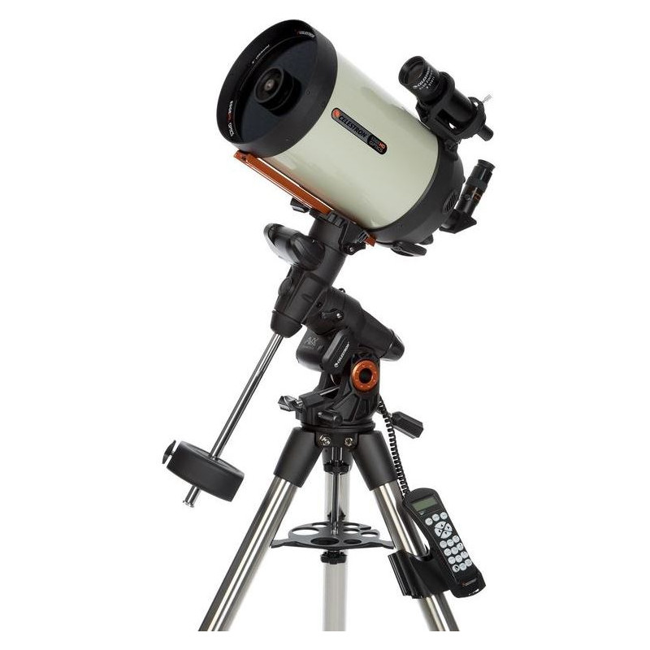

Celestron NexStar 102 e 6” SLT

Telescopi compatti, ideali per osservazioni a medi ingrandimenti di Luna, pianeti ed oggetti del cielo estesi come galassie, ammassi stellari e nebulose brillanti.
Celestron Advanced VX 6” e 8” HD

Telescopi professionali, ideali per osservazioni ad alti ingrandimenti di Luna, pianeti ed ammassi stellari.
Unistellar eQuinox ed eVscope2

Telescopi Smart professionali, col loro occhio digitale catturano in tempo reale immagini degli oggetti del cielo come galassie, ammassi stellari e nebulose e li inviano ad un dispositivo smartphone o tablet.
Supporti didattici per esplorare il cielo notturno

Laser verdi per puntare il cielo ed osservarlo ad occhio nudo, globi celesti, mappamondi ed orologi astronomici.